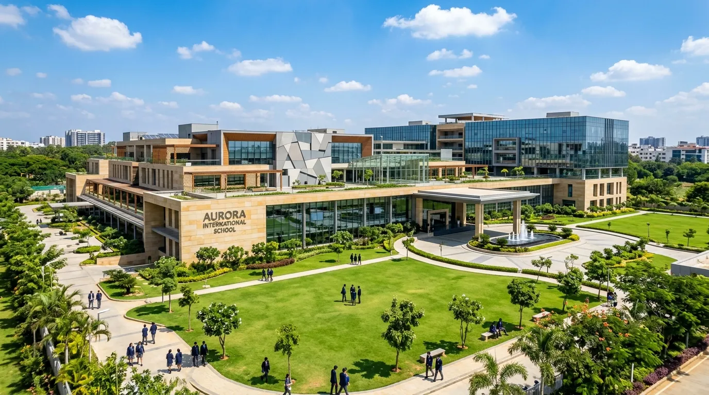
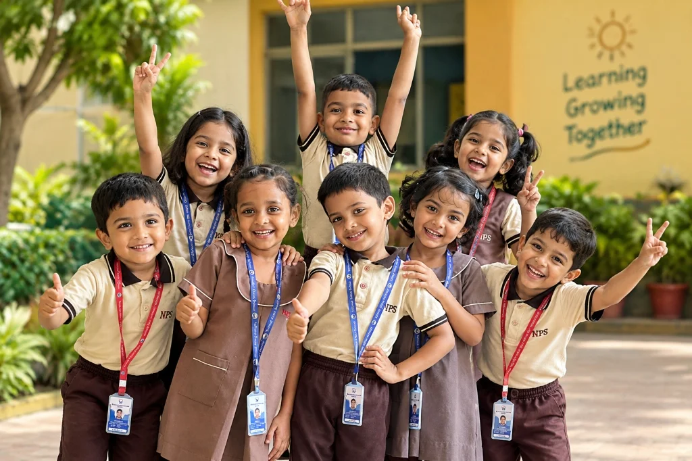
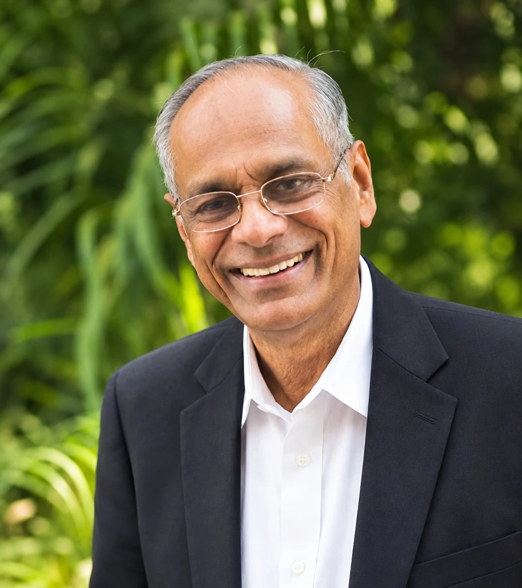
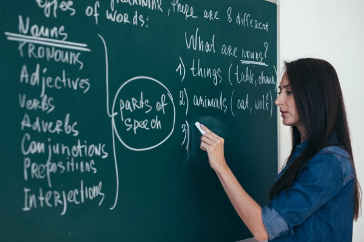
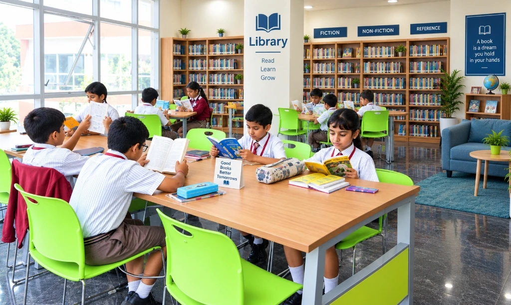
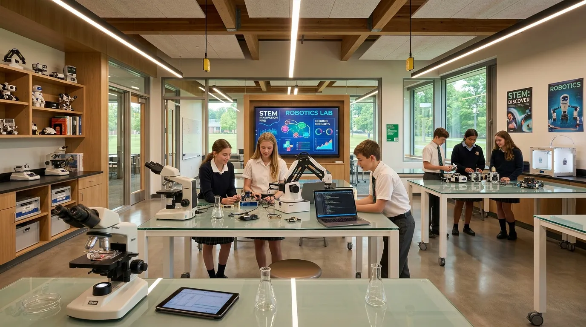
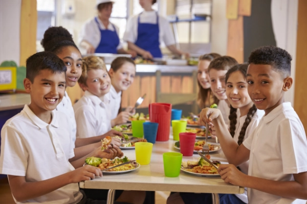
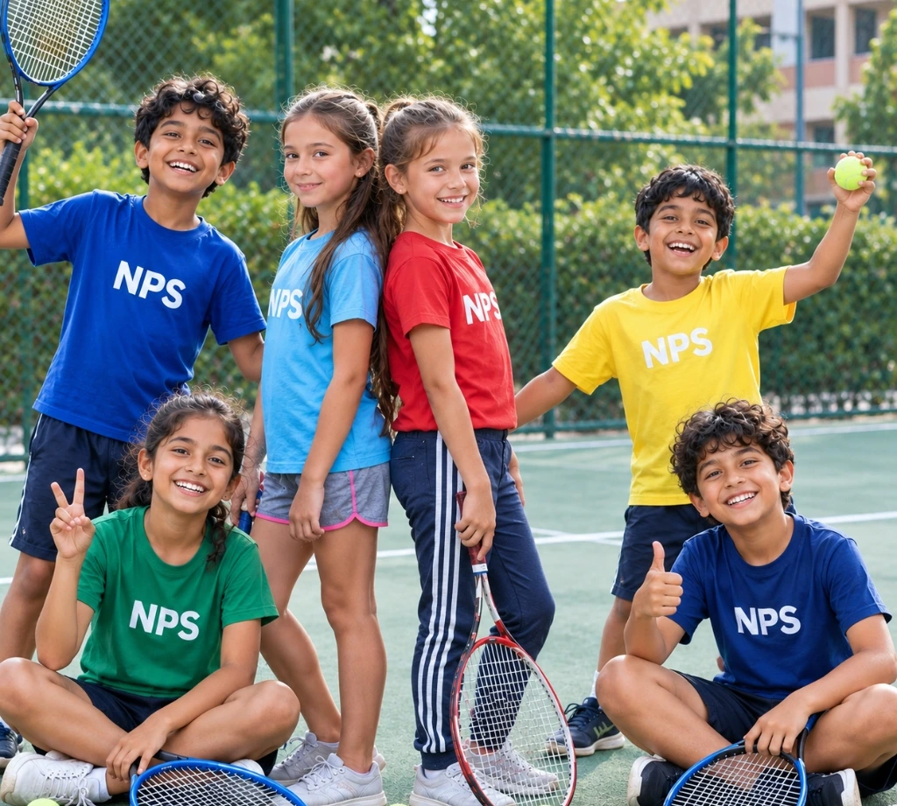
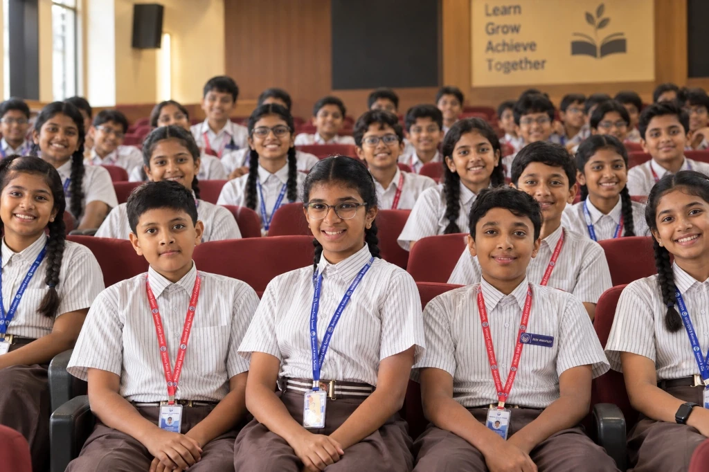
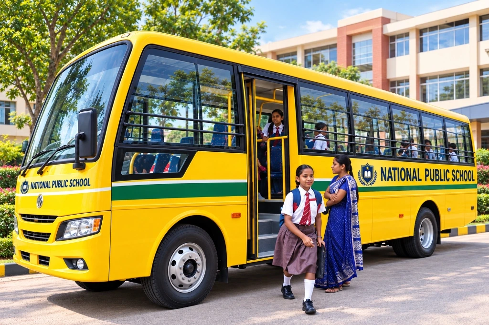

Welcome to
National Public School,
Hope Farm
Where education meets excellence. A sprawling 5-acre campus in Whitefield, Bengaluru, empowering future leaders through holistic learning, progressive inquiry, and unwavering ethical values.
A Half-Century Tradition of Academic Distinction
Welcome to National Public School, Hopefarm, a part of the prestigious NPS Group’s half-century legacy of academic excellence, now illuminating the eastern quadrant of Bangalore. Located in the vibrant Hopefarm area, our new campus is a dynamic space where tradition meets innovation.
National Public School, Hope Farm is a progressive, child-centric school driven by its core values, set in a warm and nurturing environment. It emphasizes personalized attention, upholds academic excellence, and fosters the holistic development of every child. We don’t just educate; we inspire a lifelong passion for learning and self-discovery.

Vision, Mission & Core Philosophy
Our purpose is anchored in empowering young minds with intellectual rigour, ethical integrity, and the agility to thrive globally.
VISION
To be a pre-eminent educational institution that empowers future generations through innovative and inclusive education, fostering academic excellence, ethical responsibility, and global citizenship.
MISSION
We are dedicated to delivering a high-quality, balanced educational approach that blends foundational knowledge with progressive teaching methodologies. We aim to nurture each student's unique intellectual, emotional, social, and physical potential, ensuring they are equipped with the critical thinking, adaptability, and communication skills essential for success in an ever-evolving world.
PHILOSOPHY
Our core philosophy is Child-Centric Holistic Development. We believe that education extends beyond the curriculum, setting high academic standards while cultivating core values, self-reliance, and a spirit of inquiry. We strive to create a warm, nurturing environment that emphasizes personalized attention and recognizes the individuality of every learner.

Dr. K. P. Gopalkrishna
Academic Distinction
World-class CBSE rigour stimulating analytical inquiry, problem-solving, and creative mastery.
Values & Discipline
Grounded moral ethics, integrity, and personal accountability preparing leaders for tomorrow.
Family-School Triad
A deep, active partnership between parents and faculty as the bedrock of student fulfillment.
Guiding Generations with Vision & Values
"Few things have greater importance to parents than the education of their children. Every parent looks for academic excellence, good values, and discipline for their children. Choosing the right school for them is therefore a crucial decision. NPS provides high standards for educational excellence to their students. We stimulate creativity and develop problem-solving capability in each student. As a family oriented school, we believe that partnership between the family and school is the foundation of a student’s fulfillment and success in later life."
All the dynamic institutions in the world today look forward to introducing and affecting a creative approach in educational curriculum. Teachers play a major role in implementing and supporting the students to gain competence in their efforts. Our objective at NPS is to provide a happy, balanced and challenging environment where our students have the opportunity to fulfill their individual talents and goals.
Cultivating an Atmosphere of Lifelong Learning
We passionately believe in celebrating every student's achievement, big or small, as they develop essential skills and strong character. Our goal is to ensure that through a combination of expert guidance and inspiring challenges, every learner can freely explore their unique passions, build the resilience to succeed, and ultimately excel in every endeavor.
Office of the Principal
National Public School, Hopefarm, Bengaluru
Our Core Educational Commitments
- Child-Centric Learning: Individualized attention fostering innate talents.
- Scientific Inquiry: Hands-on experimentation across STEM & Robotics labs.
- Values & Empathy: Character building and social leadership training.
- Physical Literacy: Full-sized athletic complex and indoor sporting courts.
Scholastic Programmes (Pre-KG to Grade VIII)
Our scholastic curriculum is rigorously designed to be comprehensive, stimulating, and aligned with the CBSE framework, ensuring depth of knowledge and academic rigour. We move beyond rote learning to an enquiry-based, skills-focused approach.
Montessori / Pre-KG
The Pre-KG curriculum is designed as a smooth bridge between home and formal schooling, anchored in the Montessori Philosophy and enriched with modern early childhood education practices.
LKG / UKG
The Kindergarten programme shifts toward a more structured, yet highly engaging, Play-Based and Theme-Based Learning methodology, preparing children for the academic rigour of Grade I.
Grades I - VIII (Pre-CBSE)
A sophisticated blend of Constructivism, Experiential Learning, and Application-Based teaching aligned with CBSE. Grade VI–VIII serves as a Pre-CBSE foundation developing advanced competencies early.
Co-Scholastic Programmes
The holistic development of an NPS student is ensured through a wide spectrum of co-scholastic activities that nurture diverse talents and essential life skills, fully integrated into the school day.
Creative Arts
Providing rich avenues for fine motor mastery, visual perception, and artistic confidence:
- • Fine Arts & Sketching
- • Clay Sculpture & Pottery
- • Digital Art & Media Design
- • Literary & Poetic Expression
Performing Arts
Nurturing rhythm, physical expression, auditory excellence, and stage charisma:
- • Classical & Contemporary Dance
- • Instrumental Music (Keyboards, Strings, Percussion)
- • Classical & Western Vocal Training
- • Theatre Arts & Dramatic Expression
Intellectual Growth
Stimulating analytical acumen, logical thinking, and global awareness:
- • Competitive Debating & Elocution
- • Interschool Quiz Clubs & General Knowledge
- • STEM Robotics & Automated Circuits
- • Eco-Clubs & Environmental Stewardship
School Day Schedule
Thoughtfully structured to optimize learning, engagement, and well-being. A dynamic balance of academic classes, co-scholastic activities, and physical education.
World-Class Campus Infrastructure
Spread across 5 sprawling acres in Hopefarm, Whitefield, our purpose-built campus provides a secure, stimulating, and technologically enriched atmosphere designed for 21st-century learners.

Smart ClassroomsSmart Classrooms
Spacious, well-ventilated classrooms equipped with Interactive Digital Boards, Projectors, and high-speed internet to facilitate a dynamic, technology-aided, and visually engaging learning experience.

5,000+ TitlesLibrary & Media Centre
A serene, expansive resource centre housing a vast collection of over 5000+ titles, a dedicated reference section, and digital resources (CDs, DVDs, e-books). It serves as the main centre for research, reading, and self-study, fostering a lifelong love for literature and inquiry.

Advanced LabsLaboratories (Physics, Chem, Bio, Cyber)
Purpose-built spaces designed to foster scientific inquiry and hands-on application across all key subjects. Fully equipped, modern facilities dedicated to Physics, Chemistry, Biology, Mathematics, and Computer Science (Cyber Lab) meeting strict safety protocols.
Sport & Outdoor Facilities
State-of-the-art facilities designed to promote physical literacy, outdoor play, and teamwork year-round. Features a large multipurpose playground, dedicated green play zones, full-sized Basketball Court, Cricket practice nets, Athletics, and indoor Badminton Courts.

Nutritious DiningHygienic Cafeteria
A hygienic and spacious dining area committed to providing nutritious and balanced vegetarian meals and snacks maintained under strict cleanliness standards, functioning as a comfortable area for students to relax during breaks.

Medical & CareWellness & Counselling Centre
A dedicated centre focusing on comprehensive physical and mental health support for every student. Staffed by a qualified nurse and professional counsellor for immediate first aid, routine health checks, and confidential psychological support.

500+ CapacityAuditorium & AV Hall
A magnificent, acoustically-treated auditorium and multipurpose hall with tiered seating for over 500 attendees. Serves as the central hub for cultural events, performances, Annual Day celebrations, guest lectures, and academic seminars.
Music & Dance Studios
Dedicated, purpose-built studios designed for focused practice and instruction in instrumental/vocal music and classical/contemporary dance, providing a crucial platform for self-expression and performance training.

GPS EnabledGPS-Enabled Transport
A secure, comprehensive, and technologically monitored bus service covering key routes in the Hopefarm/Whitefield/East Bangalore area. Managed by experienced staff with real-time GPS tracking and mandatory adult supervision.
Beyond Academics: Developing the Whole Child
Fostering creativity, leadership, and specialised skills is central to our mission. Students move from consumers of knowledge to active creators, innovators, and collaborators.
STEM & Robotics
Students engage in project-based learning to apply concepts from Science and Mathematics to solve real-world engineering problems. Focuses on foundational coding, robotics programming, and prototyping in a dedicated lab.
Literature & Debating
Honing oratorical skills, critical analysis, and persuasive communication through debate, elocution, literary analysis, and participation in Model UN (MUN) simulations and youth parliament.
Music, Art, Dance & Drama
Providing platforms for self-expression, cultural appreciation, and creative excellence through specialized training in classical/contemporary dance, instrumental/vocal music, fine arts, and annual productions.
Sports & Physical Education
Physical literacy is vital for developing mental resilience and sportsmanship. Features Basketball, Football, Cricket, Badminton, Table Tennis, Chess, Athletics, Taekwondo/Karate, and Yoga/Fitness.
Student Council & Leadership
Elected through a democratic process, the Student Council is the voice of the student body, planning school events, mentoring peers, maintaining school culture, and participating in ethical leadership seminars.
Community Outreach & Excursions
Instilling social responsibility through NGO partnerships, plantation drives, and environmental stewardship. Regular educational field trips to research labs, historical sites, and museums.
Admissions 2026-27: Step-by-Step Process
We welcome aspiring students to join the National Public School, Hopefarm family. Our process is fair, transparent, and designed to evaluate readiness for the NPS curriculum.
Online Registration
Submit the online enquiry or application form on the official school portal with candidate details and previous academic records.
Document Verification
Submission of student birth certificate, recent passport photos, previous school reports/progress cards, and proof of residence.
Interaction / Assessment
Informal interaction and observation for Pre-Primary; age-appropriate proficiency assessment in English, Math & Science for higher grades.
Offer & Fee Confirmation
Shortlisted candidates receive formal admission offers with fee details payable securely online via the official school parent portal.
CBSE Age Eligibility Calculator
Determine your child’s eligible grade for Academic Session 2026-27 strictly following CBSE and NPS Group guidelines (calculated as of June 1, 2026).
Why Choose NPS Hopefarm?
At NPS Hopefarm, we believe our faculty is our most valuable asset. We are looking for individuals who are not just teachers, but mentors, innovators, and lifelong learners.
Be a Pioneer
Play a pivotal role in establishing the school’s culture, standards, and reputation as a foundational member of a new, state-of-the-art campus.
Professional Growth
Benefit from continuous professional development (PD) programs, workshops, and exposure to the proven pedagogical frameworks of the NPS Group.
Excellent Environment
Work in a supportive, collaborative, and challenging environment equipped with modern infrastructure and technology, including smart classrooms and specialized labs.
Competitive Compensation
We offer a highly competitive salary package aligned with the best industry standards and excellent benefits for exceptional educators.
Current Openings for Academic Session 2026-27
Pre-Primary (Montessori/NTT), Primary (PRT), Middle School (TGT - English, Math, Science, Social Studies, Languages), Specialists in Robotics/AI, Art, Music, Dance, Sports Coaches, & Counsellors.
Frequently Asked Questions
Find answers to common questions about admissions, affiliated board, transport, safety, and school life at NPS Hopefarm.
Grade I and above: A longer school day, generally from 7:55 AM to 3:00 PM, including breaks for snacks and lunch.
Note: Specific timings will be confirmed closer to the commencement of the academic year.
Voice of Our Parents & Students
Hear first-hand experiences from families who chose NPS Hopefarm for their child's educational journey.
"Khelaton was very Colourful of all the events. At every moment, we could see craftsmanship of organizing the event. The way sports was used to build the team spirit, sportsmanship and humility was exemplary. Enjoyed every moment and well planned. Thanks to all staff for making this Great Success!"
"It is Bhuvik’s second year at NPS Hope Farm . It has been a very good decision to admit him here. Apart from academics he has been learning other skills which are appreciated. We are happy all activities are conducted in a smooth manner."
"Khelaton was very Colourful of all the events. At every moment, we could see craftsmanship of organizing the event. The way sports was used to build the team spirit, sportsmanship and humility was exemplary. Enjoyed every moment and well planned. Thanks to all staff for making this Great Success!"
Happenings & Events at NPS Hopefarm
A glimpse into the celebrations, delegations, and student milestones across our academic year.
Contact National Public School, Hopefarm
Our admissions counsellors and administrative team are here to assist you. Visit our campus or write to us directly.
Campus Information
National Public School, Hopefarm Whitefield is conveniently accessible from all parts of East Bangalore.
Campus Address
No. 141, Channasandra Grama, Bidarahalli Hobli, Near Isha Misty Green Villas, Bengaluru – 560049
Admissions Helplines
Email Address
Office Hours
Monday to Saturday: 8:30 AM – 3:30 PM (Prior appointment recommended for campus tours)
Send Us a Message
Fill in your inquiry and our academic desk will get back to you promptly.